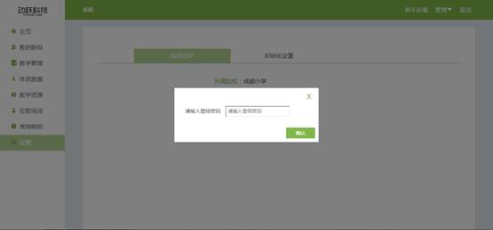
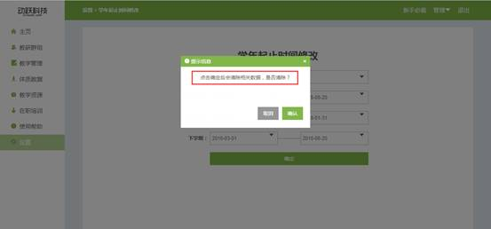

学年设置
视频教程：
首先要设置学年后，才能进行后续的教学管理。
学年设置步骤：
1. 登录动跃体育教学管理平台后，进入平台操作界面。
2. 点击进入【设置】 ,进入后，需要输入学校管理员的平台登陆密码，方可进行下一步操作。登陆密码是为了防止学校任一老师均可修改造成信息错乱，所以设置为只有学校管理员可修改此功能。

3. 单击初始化设置 > 点击设置学年起止时间按钮 , 如下图:

4. 点击进入后，按要求填写设置学年起止时间，填写要求如下:
>学年：选择需要当前学年。
>学年时间：根据学校的学年起止时间设置。
>上学期：根据学校的上学期起止时间设置。
>下学期：根据学校的下学期起止时间设置。
5. 点击确定按钮 , 提交设置学年起止时间信息，即保存成功。
注：第一次保存，会直接保存成功，之后保存，会弹出窗口，显示将清除之前所保存的数据，点击确认后，会显示新的数据。
